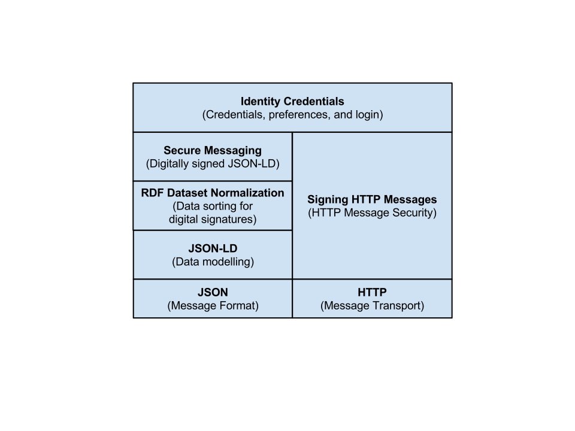
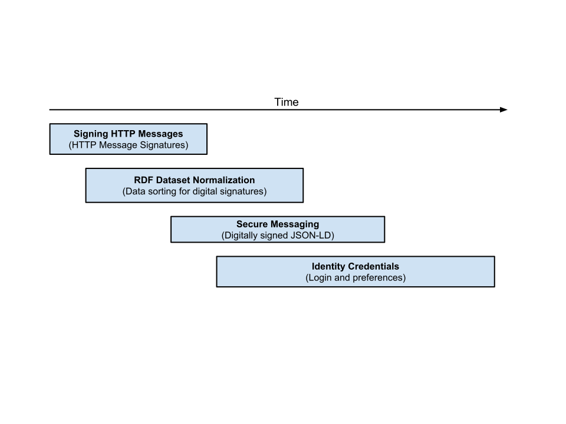
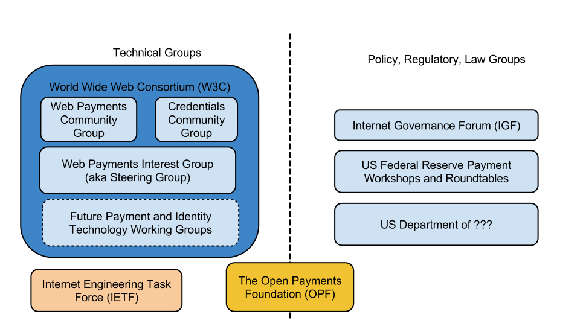

This roadmap document outlines the proposed technology stack and development
timeline for the set of technologies being worked on by the Credentials
Community Group.
Introduction
This document outlines the technology stack and development timeline for the
set of technologies being worked on by the Credentials Community Group. It
is intended for those people that want to understand all of the technical
pieces being proposed, how they fit together, and the development timeline
for each technology.
Readers should understand that this roadmap document is a work in progress
and while many of the technologies discussed in this document have been
implemented and are in production, others may be changed or modified heavily
if driven through a standardization track at W3C. This document is a proposed
roadmap, not the final roadmap for version 1.0.
Technology Stack
The Credentials technology stack is designed on generally accepted design
principles outlined for the Architecture of the World Wide Web[[WEBARCH]]. It
also heavily re-uses W3C and IETF technology, such as JSON-LD [[JSON-LD]]
and HTTP [[RFC7230]]. A high-level diagram of the technology stack is shown
below for reference:

A description of the technologies shown in the diagram above is provided for
those that may be unfamiliar with the technologies:
- Javascript Object Notation [[RFC4627]]
-
JavaScript Object Notation (JSON) is a text format for the serialization of
structured data. JSON can represent four primitive types (strings, numbers,
booleans, and null) and two structured types (objects and arrays). It is a
very popular format among Web developers.
- HyperText Transport Protocol [[RFC7230]]
-
The Hypertext Transfer Protocol (HTTP) is a generic interface protocol for
information systems. It is
designed to hide the details of how a service is implemented by
presenting a uniform interface to clients that is independent of the
types of resources provided. Likewise, servers do not need to be
aware of each client's purpose: an HTTP request can be considered in
isolation rather than being associated with a specific type of client
or a predetermined sequence of application steps. The result is a
protocol that can be used effectively in many different contexts and
for which implementations can evolve independently over time.
- JSON for Linking Data [[JSON-LD]]
-
JSON-LD is a lightweight syntax to serialize Linked Data in JSON [[RFC4627]].
Its design allows existing JSON to be interpreted as Linked Data with minimal
changes. JSON-LD is primarily intended to be a way to use Linked Data in
Web-based programming environments, to build interoperable Web services,
and to store Linked Data in JSON-based storage engines.
- Signing HTTP Messages [[HTTP-SIGNATURES]]
-
When communicating over the Internet using the HTTP protocol, it can be
desirable for a server or client to authenticate the sender of a particular
message. It can also be desirable to ensure that the message was not tampered
with during transit. The "Signing HTTP Messages" specification describes a
way for servers and clients to simultaneously add authentication and message
integrity to HTTP messages by using a digital signature.
- RDF Dataset Normalization [[RDF-NORMALIZATION]]
-
RDF (which JSON-LD uses) utilizes a graph-based data model for making claims
about the world and provides the foundation for reasoning upon that graph
of information. At times, it becomes necessary to compare the differences
between graphs, digitally sign graphs, or generate short identifiers for
graphs via hashing algorithms. RDF Dataset Normalization outlines an
algorithm for normalizing RDF graphs such that these operations can be
performed on the normalized graphs.
- Secure Messaging [[SECURE-MESSAGING]]
-
The Secure Messaging specification describes a simple, decentralized security
infrastructure for the Web based on public key cryptography. This system
enables Web applications to establish identities for agents on the Web,
associate security credentials with those identities, and then use those
security credentials to send and receive messages that are both encrypted
and verifiable via digital signatures.
- Open Badges [[OPEN-BADGES]]
-
The Open Badges specification stack is published by the
Badge Alliance and
its purpose is to enable the storage and transmission of earned skills in a
way that is verifiable and easily sharable.
- Identity Credentials [[IDENTITY-CREDENTIALS]]
-
An identity is a description of a particular entity such as a person, software
agent, or organization. A credential is a qualification, achievement, quality,
or information about an identity's background such as a name, government ID,
home address, or university degree. The Identity Credentials specification
describes mechanisms for reading credentials from and writing credentials to an
identity while ensuring that the information is only accessible to
authorized applications.
Timeline
The technologies proposed by the group are layered in such a way to allow the
base technologies to be re-used by other Web-based standards. Thus, there is
a natural order of progression in developing these technologies, from low-level
to high-level:

Active Collaborators
The following organizations are expected to be directly involved in the
creation of the technologies outlined in this roadmap:
